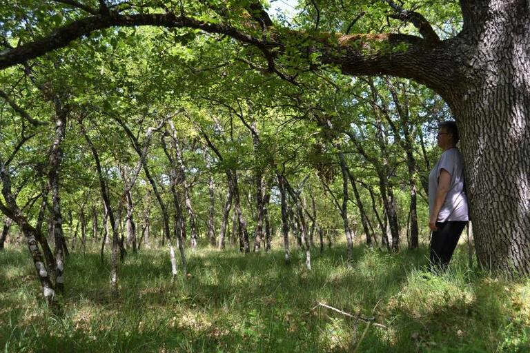

Visita · Tremp
La roureda d’Aulàs, al cor de la Terreta, és una de les masses de roure més destacades de Catalunya a aquesta altitud. Per la seva tranquil·litat i valor natural, la Diputació de Lleida l’ha…